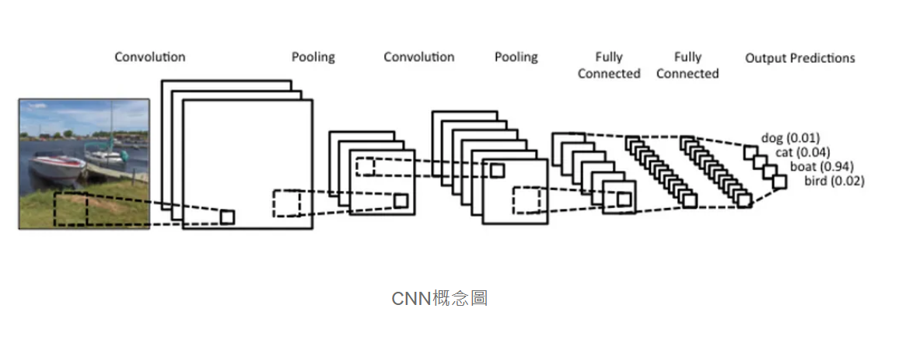
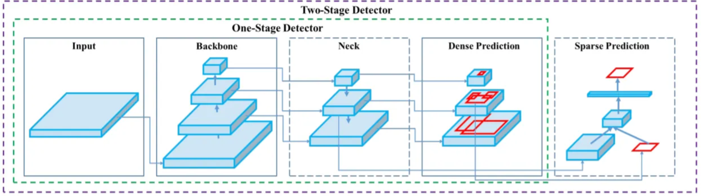

計算機概論期末報告
第五組
Introduction
- Traditional Chinese Medicine diagnostics consist of four key methods: Visual Inspection, listening, questioning, and palpation.
- These methods, while effective, often rely on practitioners' subjective judgment, leading to variability in diagnosis.
- Artificial Intelligence (AI) offers the potential to enhance the accuracy, efficiency, and standardization of TCM diagnostic methods, transforming traditional practices into modern, data-driven systems.
Procedure
AI in Questioning Diagnosis
AI in Visual Inspection
AI in Palpation Diagnosis
Integrated Systems
Data Analysis
Data Preprocessing
Standardizing Image Size
Drawing Boundaries
Removing Background
Data Augmentation
Adjusting brightness, contrast, and sharpness.
Data Distribution
Using data augmentation to balance underrepresented classes.
Result-Model
CNN
Basic Foundation for Preliminary Classification
As a foundational tool in deep learning models, can extract both low-level and high-level features from images.
VGG16

Fine-Grained Image Classification
It performs exceptionally well in multi-class classification problems.
YOLOv4
Focusing on Local Features in Images
It can quickly segment target regions in an image and classify those regions.
Result-Workflow
Future
- Expand AI Applications: Extend to other TCM domains (e.g., dietary therapy, herbal prescriptions). Integrate listening diagnosis to analyze voice patterns for respiratory or emotional conditions.
- Clinical Validation: Conduct large-scale trials to validate AI models for real-world use. Collaborate with TCM institutions globally to ensure diverse datasets.
- Ethics and Regulation: Establish ethical standards for data collection and AI usage in TCM. Ensure compliance with medical regulations for AI-based systems.
Additional Insights
In addition to the above, the integration of AI into TCM should focus on creating hybrid models that combine data-driven AI systems with practitioners' experiential knowledge. This approach can help bridge the gap between traditional methods and modern technologies.
Moreover, AI-driven TCM platforms should prioritize accessibility and affordability to ensure that they benefit patients in underserved regions, where traditional healthcare resources are limited.